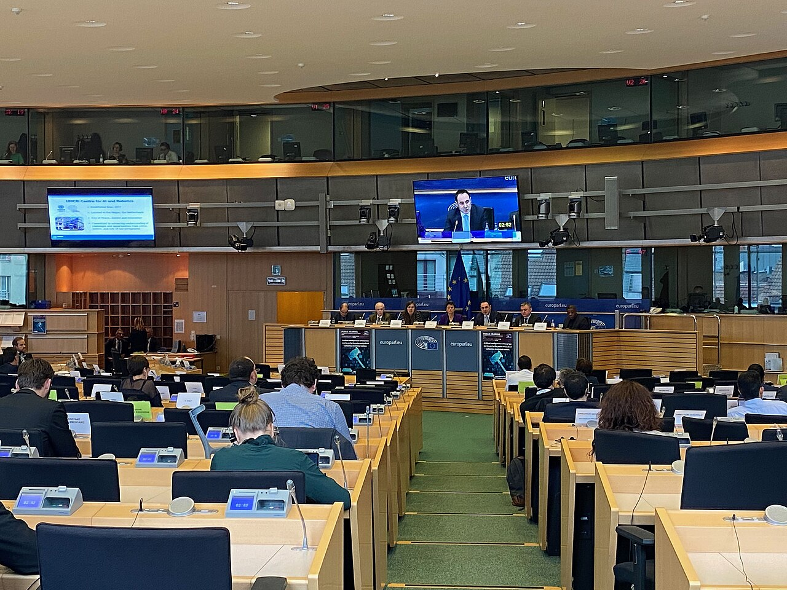

Technology • Report
AI Needs Electricity, Steel, and Time
Behind the chatbot boom is a slower race over transformers, substations, fabs, and the people who know how to build them.
A digital newspaper built for sourced long-form reporting.
Front page
Politics, culture, technology, economics, education, health, philosophy, science, world, and opinion in a trust-first digital newspaper.

Photo note
Election-day signage outside a polling place. This lead package keeps the full image visible and logs the source in the site photo record.
Real topic-linked image • Rights tracked in the photo ledger
Front Page • Politics • Analysis
The White House order, the federal form, and the lawsuits that followed reveal a deeper fight: whether federal elections should be organized around documentary gatekeeping or broad presumptive access backed by verification and enforcement.

Photo note
Artemis II lifting off from Kennedy Space Center. The image is real-world, story-linked, and cleared for publication in this package.
Real topic-linked image • Rights tracked in the photo ledger
Front Page • Science • Report
The launch mattered, but the deeper achievement was operational: human-rated hardware, multinational systems, and a lunar mission that generated evidence rather than nostalgia.

Photo note
Leaders at the NATO summit in The Hague. This filler panel replaces the dead gap under the photo with useful context.
Real topic-linked image • Rights tracked in the photo ledger
Front Page • World • Analysis
The continent has moved beyond vague seriousness. The next test is whether spending pledges and white papers can become production, movement, and usable deterrence before strategic time runs out.

Photo note
The U.S. Census Bureau headquarters. The homepage now uses the image area for caption context instead of empty space.
Real topic-linked image • Rights tracked in the photo ledger
Front Page • Opinion • Essay
Public statistics are not bureaucratic garnish. They are the information infrastructure that lets a democratic state know its labor markets, neighborhoods, businesses, and population well enough to act without governing by mood.
Technology • Report
Behind the chatbot boom is a slower race over transformers, substations, fabs, and the people who know how to build them.

Health • Report
H5N1 remains a low public-health risk for the general public, but it has already redrawn dairy surveillance, farm biosecurity, and the line between agricultural disease control and health preparedness.

Economics • Report
Mortgage rates are lower than their worst recent highs but still high enough to ration buying. Rents are cooling more slowly than households feel, and the nation’s housing squeeze remains the most intimate version of inflation.
Fresh reporting added today. Older front-page stories stay in place below and across the archive.
Politics • Daily Issue
A March executive order, a wave of state lawsuits, and a widening Justice Department data battle are colliding with the 2026 election calendar, forcing judges to decide how much power Washington can exert over voting rules before ballots go out.
Read story
Culture • Daily Issue
As New York’s flagship museum fields a new wave of organizing and a major spring exhibition cycle, the culture industry is confronting a question rippling far beyond one building: can institutions sell prestige while cutting labor?
Read storyTechnology • Daily Issue
A U.S. technology boom is now running into export controls, utility limits, and a fast-moving fight over who pays for the infrastructure behind AI.
Read story
Economics • Daily Issue
March CPI showed gasoline-led price pressure, but the harder story for households is what happens when tariffs, rent, and slower wage gains collide with uneven job growth.
Read storyEducation • Daily Issue
The Education Department says it will turn on real-time identity fraud detection for the 2026–27 FAFSA on April 26, 2026, part of a broader anti-fraud push that could speed up some cases while adding new verification friction for students and colleges.
Read story
Health • Daily Issue
A new regional surge is testing vaccination systems, border health response, and the U.S. public-health machinery just as domestic case counts climb and outbreak control depends on speed, trust, and local capacity.
Read story
Philosophy • Daily Issue
As the AI Act’s most consequential rules approach application in August 2026, Europe is moving from abstract principles to enforceable duties—and exposing the deeper philosophical question underneath: whether dignity, accountability, and consent can survive when intelligence is industrialized.
Read story
Science • Daily Issue
Federal budgets, court fights and outbreak surveillance are colliding with a broader question: how much scientific capacity the United States can preserve when institutions are asked to do more with less.
Read story
World • Daily Issue
A new wave of war in Lebanon has pushed Syrians, Lebanese and aid agencies into a fast-moving cross-border crisis that is testing ceasefires, asylum policy and the region’s fragile humanitarian architecture.
Read story
Opinion • Daily Issue
Data centers are no longer a private tech story. They are a public utilities story—and lawmakers should stop pretending the bill can be hidden.
Read story
AI • Daily Issue
A new phase of the AI boom is forcing Washington to choose between speed, safety and control as power demand rises, federal standards sharpen and lawmakers push back over state rules, children and jobs.
Read story
Geopolitics • Daily Issue
A fragile pause in the Iran war has eased the immediate shipping panic, yet the Strait of Hormuz remains the world’s clearest test of alliance politics, deterrence, and energy vulnerability.
Read story
Film • Daily Issue
A convergence of studio consolidation, union contract talks, tax-credit fights, and a still-shifting box office has put film’s business model back on unstable ground.
Read story
Pop Culture • Daily Issue
As streamers chase hit shows and social apps chase attention, YouTube’s scale, creator economy, and algorithmic discovery are reshaping what audiences watch, who gets paid, and which kinds of celebrity still matter.
Read story
Niche • Daily Issue
As amateur radio grapples with aging ranks and new competition for attention, 2026 is becoming a test of whether local clubs can recruit, teach, and stay relevant.
Read storyLatest
Opinion • Essay
Every government loves the appearance of decisiveness. Few things are more flattering to power than a confident announcement delivered ahead of evidence. But democracies do not survive on…

Culture • Analysis
There was a long phase in which streaming was narrated as disruption, then another in which it was narrated as oversupply, and then a third in which every…
Health • Report
Bird flu has produced one of the stranger public-health narratives of the past two years: an event serious enough to reorder federal farm surveillance and food-safety routines, yet…
World • Analysis
For years, European arguments about defense could be conducted in the future tense. Leaders promised seriousness. White papers named priorities. Summits produced communiqués dense with resolve. The question…

Education • Analysis
Higher education has spent several years living inside a story of drift. The easy version was that college had become more expensive, less trusted, less demographically favored, and…
Economics • Report
Inflation is often discussed as a national weather report. Shelter is where it becomes domestic life. People do not experience the cost of housing as an abstract index…
Politics • Analysis
The loudest language around proof-of-citizenship voting rules is moral language. Supporters talk about legitimacy, confidence, and the simple proposition that only citizens may vote in federal elections. Opponents…
Science • Report
When Artemis II rose from Launch Complex 39B on April 1, the easy headline wrote itself. Human beings were going back around the Moon. NASA said the four-person…
Desks
National Desk
Power, administration, elections, and the law of democratic procedure.
Proof of Citizenship Is Not Just a Voting Rule. It Is a Theory of the Electorate.Culture Desk
Institutions, labor, audiences, and the economics under the room.
Streaming Grew Up and Became TV Again.Technology Desk
Infrastructure, industry, and the machinery behind digital life.
AI Needs Electricity, Steel, and TimeEconomics Desk
Indicators translated back into rent, wages, spending, and shelter.
Shelter Is Still the Inflation Story People Live Inside.Education Desk
Schools, campuses, attendance, learning, and public-system capacity.
The College Comeback Is Real. It Is Also Uneven.Health Desk
Public health, vaccination, surveillance, and the line between fear and evidence.
Bird Flu Changed Farm Policy Before It Changed Human Medicine.Ideas Desk
Essays on judgment, ethics, institutions, and the words societies use to think.
The Missing Word in the AI Debate Is Judgment.Science Desk
Research, engineering, and the physical systems required to turn ambition into evidence.
Artemis II Proved the Moon Is an Engineering Project AgainWorld Desk
Alliances, borders, defense industry, and how geopolitical language becomes logistics.
Europe’s Defense Turn Is Now a Budget, Supply-Chain, and Time ProblemOpinion Desk
Arguments anchored in public facts, not hot air.
A Country That Cannot Measure Itself Cannot Govern ItselfTrust
Every feature ships with visible dates, bylines, source notes, and corrections status.
Images
Story art is bundled locally, documented in photo records, and no longer disappears on click-through.
Workflow
The homepage, archive, section pages, feeds, and story pages are all driven from one master edition file.